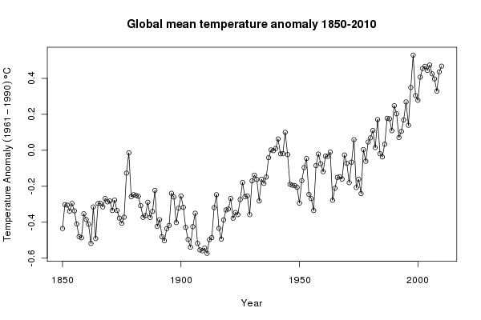
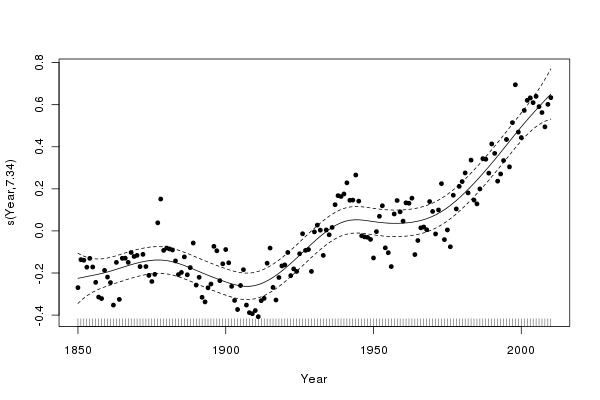
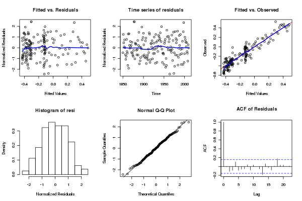
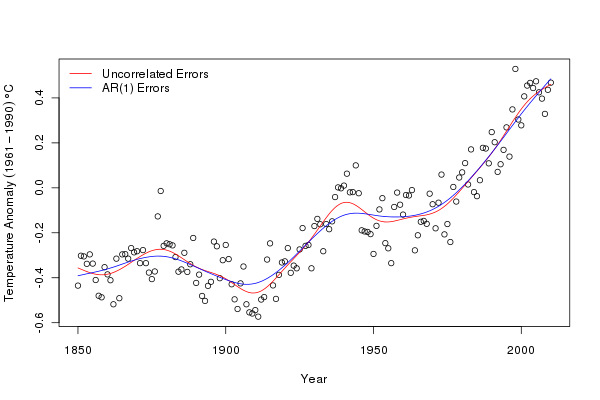
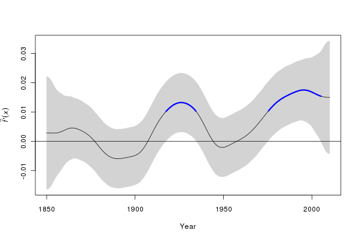
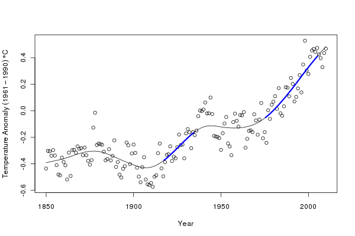
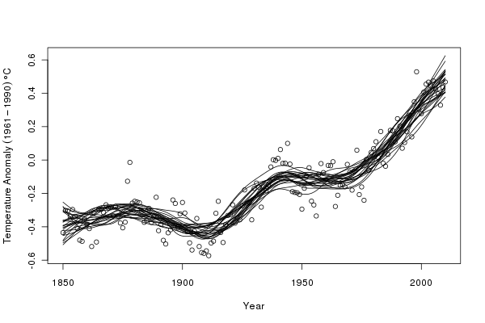
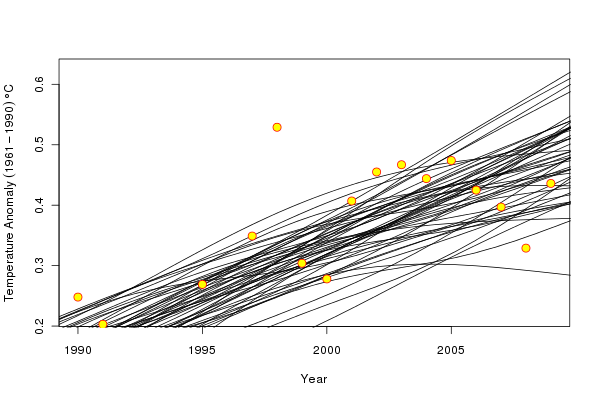

Additive modelling and the HadCRUT3v global mean temperature series
Posted in
Tagged
Blogroll
Earlier, I looked at the HadCRUT3vgl data set using generalized least squares to investigate whether the trend in temperature since 1995 was statistically significant. Here I want to follow-up one of the points from the earlier posting; namely using a statistical technique that fits a local, and not global, model to the entire time series and see how that informs our knowledge of trends in the recent period. In this post, I’ll be using the mgcv and nlme packages plus some custom functions I wrote to produce diagnostics plots of gamm() time series models and to compute derivatives of fitted splines using the method of finite differences. The latter can be loaded into R from my github repository
## load the packages and code we need
require(mgcv)
require(nlme)
## load custom functions
tmp <- tempfile()
download.file("https://github.com/gavinsimpson/random_code/raw/master/derivFun.R",
tmp, method = "wget")
source(tmp)
tmp <- tempfile()
download.file("https://github.com/gavinsimpson/random_code/raw/master/tsDiagGamm.R",
tmp, method = "wget")
source(tmp)(If the download code above doesn’t work for you — it does on my Linux machine — then download the files using your browser and source() in the usual way.) Next, load the data and process the file as per the earlier post (see here for details). The last lines of code plot the data (note that I only intend to use the annual means in this posting — dealing with monthly data needs a few extra steps to model the seasonal variation in the data).
## Global temperatures
URL <- url("http://www.cru.uea.ac.uk/cru/data/temperature/HadCRUT3v-gl.dat")
gtemp <- read.table(URL, fill = TRUE)
## Don't need the even rows
gtemp <- gtemp[-seq(2, nrow(gtemp), by = 2), ]
## set the Year as rownames
rownames(gtemp) <- gtemp[,1]
## Add colnames
colnames(gtemp) <- c("Year", month.abb, "Annual")
## Data for 2011 incomplete so work only with 1850-2010 data series
gtemp <- gtemp[-nrow(gtemp), ]
## Plot the data
ylab <- expression(Temperature~Anomaly~(1961-1990)~degree*C)
plot(Annual ~ Year, data = gtemp, type = "o", ylab = ylab)The resulting plot should look like this:

Looking at the plot, we can see that the level of the global annual mean temperature record has varied substantially over the 160 years of observations. To fit a global, linear trend to the entire data would make little sense — clearly such a model would not provide a good fit to the data, failing to describe the relationship in temperature over time. Asking whether such a model is statistically significant is therefore moot. Instead, we want a model that can describe the changes in the underlying level. There are many such models, such as local linear smooths or loess smooths, but here I will use a thin-plate regression spline fitted using the gamm() function.
Why use a function that can fit generalized additive mixed models (GAMMs)? The sorts of additive models that can be fitted using gam() (note the one “m”) can also be expressed as a linear mixed model, and the correlation structures I used in the earlier post can also be used in the lme() function, that fits linear mixed models. gamm() allows the two elements to be combined.
The additive model (without any correlation structure at this stage) is fitted and summarised as follows
> ## Fit a smoother for Year to the data
> m1 <- gamm(Annual ~ s(Year, k = 20), data = gtemp)
> summary(m1$gam)
Family: gaussian
Link function: identity
Formula:
Annual ~ s(Year, k = 20)
Parametric coefficients:
Estimate Std. Error t value Pr(>|t|)
(Intercept) -0.165404 0.006972 -23.72 <2e-16 ***
---
Signif. codes: 0 ‘***’ 0.001 ‘**’ 0.01 ‘*’ 0.05 ‘.’ 0.1 ‘ ’ 1
Approximate significance of smooth terms:
edf Ref.df F p-value
s(Year) 11.94 11.94 101.3 <2e-16 ***
---
Signif. codes: 0 ‘***’ 0.001 ‘**’ 0.01 ‘*’ 0.05 ‘.’ 0.1 ‘ ’ 1
R-sq.(adj) = 0.883 Scale est. = 0.0077778 n = 161
This smoother explains 88% of the variance in the data, uses almost 12 degrees of freedom and is statistically significant, in the sense that the fitted smoother is different from a null model. We should not take this p-value at face value however, as these data are a time series and the standard errors on the fitted smoother are likely to be overly narrow. The ACF and partial ACF can be used to determine what types of time series model might be required for the residuals
## look at autocorrelation in residuals:
acf(resid(m1$lme, type = "normalized"))
## ...wait... look at the plot, only then do...
pacf(resid(m1$lme, type = "normalized"))
## seems like like sharp cut-off in ACF and PACF - AR terms probably bestGiven the form of the ACF and pACF plots, AR terms will probably be best, so we fit models with AR(1) and AR(2) terms. To do this, we add a correlation argument to the model calls
## ...so fit the AR1
m2 <- gamm(Annual ~ s(Year, k = 30), data = gtemp,
correlation = corARMA(form = ~ Year, p = 1))
## ...and fit the AR2
m3 <- gamm(Annual ~ s(Year, k = 30), data = gtemp,
correlation = corARMA(form = ~ Year, p = 2))We can use the anova() method for "lme" objects to assess whether the models with the correlation structures fit the data better than the original model
> anova(m1$lme, m2$lme, m3$lme)
Model df AIC BIC logLik Test L.Ratio p-value
m1$lme 1 4 -273.6235 -261.2978 140.8117
m2$lme 2 5 -299.7355 -284.3285 154.8678 1 vs 2 28.112063 <.0001
m3$lme 3 6 -298.7174 -280.2290 155.3587 2 vs 3 0.981852 0.3217
The AR(1) model provides the best fit to the data, being a significant improvement over the model without a correlation structure. AIC and BIC also both favour the AR(1) model over the AR(2) or the original model. The plot() method for "gam" objects can be used to view the fitted smoother; here I superimpose the residuals and alter the plotting character and size
plot(m2$gam, residuals = TRUE, pch = 19, cex = 0.75)to produce this plot

Some diagnostic plots can be be produced using my tsDiagGamm() function (loaded earlier)
with(gtemp, tsDiagGamm(m2, timevar = Year, observed = Annual))which produces this figure:

There do not seem to be any causes for concern in the diagnostics. Finally, we can compare the fits of the original model and the model with AR(1) residuals. I use a general procedure to draw the fitted smooths on the original data, but predicting from each model at 200 equally spaced time points over the period of the data
plot(Annual ~ Year, data = gtemp, type = "p", ylab = ylab)
pdat <- with(gtemp,
data.frame(Year = seq(min(Year), max(Year),
length = 200)))
p1 <- predict(m1$gam, newdata = pdat)
p2 <- predict(m2$gam, newdata = pdat)
lines(p1 ~ Year, data = pdat, col = "red")
lines(p2 ~ Year, data = pdat, col = "blue")
legend("topleft",
legend = c("Uncorrelated Errors","AR(1) Errors"),
bty = "n", col = c("red","blue"), lty = 1)We can see that the AR(1) model is smoother than the original model. The AR(1) has absorbed some of the variation explained by the spline (trend) in the original and highlights an important point when fitting additive models to non-independent data; the fitted model may be overly complex and over fitted to the data if we do not account for the violation of independence in the residuals.

Having fitted a model, we can start to use it and interrogate it for a variety of purposes. One key question we might ask of the model is when were temperatures statistically significantly increasing (or decreasing for that matter)?
An approach answering this question is to compute the first derivatives of the fitted trend. We don’t have an analytical form for the derivatives easily to hand, but we can use the method of finite differences to compute them. To produce derivatives via finite differences, we compute the values of the fitted trend at a grid of points over the entire data. We then shift the grid by a tiny amount and recompute the values of the trend at the new locations. The differences between the two sets of fitted values are the first differences of the trend and give a measure of the slope of the trend at any point in time.
The computations are not too involved and have been incorporated into a Deriv() function. We evaluate the trend at 200 equally spaced points. This function has a plot() method that draws a time series of first derivatives with a confidence interval. Periods where zero is not included in confidence interval can be coloured to show important periods of change (red for decreasing, and blue for increasing). The sizer argument turns on/off the colouring and alpha determines the coverage for the confidence interval.
m2.d <- Deriv(m2, n = 200)
plot(m2.d, sizer = TRUE, alpha = 0.01)
We can manipulate the output from the Deriv() function to superimpose periods of significant change in temperature, as shown above on the first derivative plot, on the fitted trend:
plot(Annual ~ Year, data = gtemp, type = "p", ylab = ylab)
lines(p2 ~ Year, data = pdat)
CI <- confint(m2.d, alpha = 0.01)
S <- signifD(p2, m2.d$Year$deriv, CI$Year$upper, CI$Year$lower,
eval = 0)
lines(S$incr ~ Year, data = pdat, lwd = 3, col = "blue")
lines(S$decr ~ Year, data = pdat, lwd = 3, col = "red")The resulting figure is shown below:

The derivatives suggest two periods of significant increase in temperature (at the 99% level); during the inter-war years and post ~1975. The second period of significant increase in global annual mean temperature appears to persist until ~2005. After that time, we have insufficient data to distinguish the fitted increasing trend from a zero-trend post 2005. It would be wrong to interpret the lack of significant change during periods where the fitted trend is either increasing or decreasing as gospel truth that the globe did or did not warm/cool. All we can say is that given this sample of data, we are unable to detect any further periods of significant change in temperature other than the two periods indicated in blue. This is because our estimate of the trend is subject to uncertainty.
Another observation worth making is that the fitted spline is based on the ML estimates of the coefficients that describe the spline. Each of these coefficients is subject to uncertainty, just as the regression coefficients in the previous posting. The set of coefficients and their standard errors form a multivariate normal distribution, from which we can sample new values of the coefficients that are consistent with the fitted model but will describe slightly different splines through the data and consequently, slightly different trends.
The MASS package contains function mvrnorm(), which allows us to draw samples from a multivariate normal distribution initialized using the model coefficients (coef(m2$gam)) and the variance-covariance matrix of the coefficients (vcov(m2$gam)). We set a seed for the random number generator to make the results reproducible, and take 1000 draws from this distribution
## simulate from posterior distribution of beta
Rbeta <- mvrnorm(n = 1000, coef(m2$gam), vcov(m2$gam))
Xp <- predict(m2$gam, newdata = pdat, type = "lpmatrix")
sim1 <- Xp %*% t(Rbeta)The \( X_{p} \) matrix is a matrix such that when multiplied by the vector of model parameters it yields values of the linear predictor of the model. In other words, \( X_{p} \) defines the parametrisation of the spline, which when multiplied by the model coefficients yields the fitted values of the model. Rbeta contains a matrix of coefficients that sample the uncertainty in the model. A matrix multiplication of the \( X_{p} \) matrix with the coefficient matrix generates a matrix of fitted values of the trend, each column pertaining to a single version of the trend.
Next, I select, at random, 25 of these trends to illustrate the sorts of variation in the fitted trends
## plot the observation and 25 of the 1000 trends
set.seed(321)
want <- sample(1000, 25)
ylim <- range(sim1[,want], gtemp$Annual)
plot(Annual ~ Year, data = gtemp, ylim = ylim, ylab = ylab)
matlines(pdat$Year, sim1[,want], col = "black", lty = 1, pch = NA)
What do simulated trends suggest for the most recent period that has been the interest of many? The following code focusses on the post 1990 data and shows 50 of the simulated trends
set.seed(321)
want <- sample(1000, 50)
rwant <- with(pdat, which(Year >= 2000))
twant <- with(gtemp, which(Year >= 2000))
ylim <- range(sim1[rwant,want], gtemp$Annual[twant])
plot(Annual ~ Year, data = gtemp, ylim = ylim,
xlim = c(1990, 2009), type = "n", ylab = ylab)
matlines(pdat$Year, sim1[,want], col = "black", lty = 1, pch = NA)
points(Annual ~ Year, data = gtemp, col = "red", bg = "yellow",
pch = 21, cex = 1.5)which produces the following figure

A couple of the simulated trends are suggestive of a decreasingdecreasing trend over the period, whilst a number suggest that the temperature increase has stalled. However, the majority of the simulated trends suggest that the temperature increase continues throughout the recent period though perhaps with reduced slope, and this is consistent with the fitted trend which also increases throughout this period. The range of trends, particularly at the very end of the observation period reflects the large degree of uncertainty in the trend at the edge of the data; we simply do not have the data available to constrain our estimates of the trend at the end of the observation period.
In summary, by using a model that is fitted to the entire period of data but which can adapt to local features of the time series provides a powerful means of estimating trends in temperature data. The thin-plate spline that describes the fitted trend is defined by a set of coefficients that we can use to explore the uncertainty in the model via simulation. Because the model can be expressed as a linear mixed model we can exploit the lme() function to fit correlation structures in the model residuals to account for the autocorrelation in the data.
Social